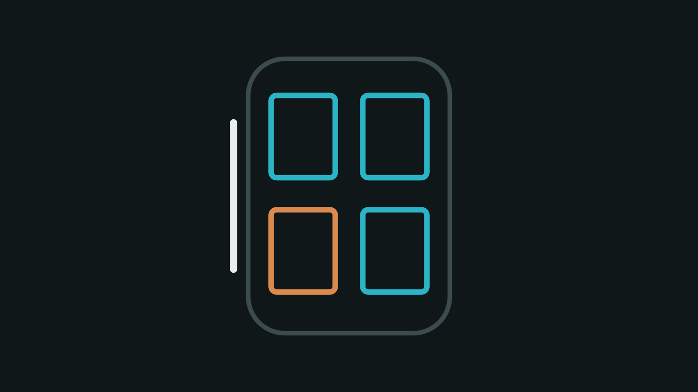
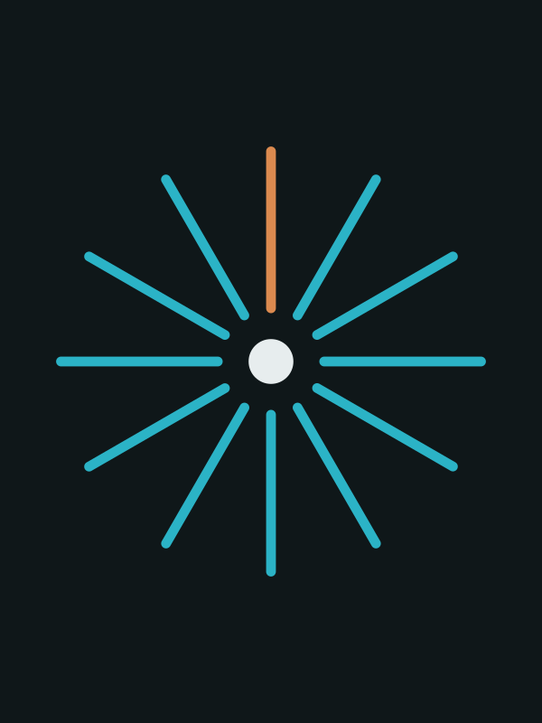
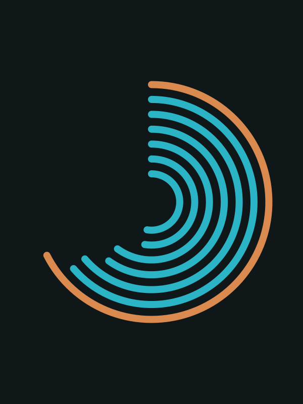
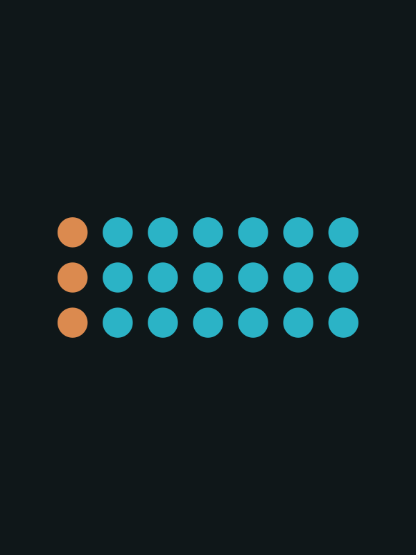

Start here
Five reports, read top to bottomThe reports follow the map: long-range forces first, then the shifts they drive, then what is actually shipping. Each row gives the report's scope as stated in the report.
- 01Forces · 10–15 yrsMega Trends Outlook 20402026–2040 · 7 trends scored · 130 references
- 02Shifts · 1–5 yrsAgentic AI and the Consumer2027 · US, EU and China · general consumer
- 03Shifts · 1–5 yrsMobility Product Outlook 2026–203112-dimension framework · six markets
- 04Shifts · 1–5 yrsPhysical AI and the Rider’s Cabin2026–2027 · global, whole stack · cabin and rider
- 05Signals · benchmarksIn-Car AI Assistant Benchmark21 assistants · 7 dimensions · refreshed quarterly
The map
Layers × domainsRead top to bottom: long-range forces drive shifts in technology and behaviour, benchmarks show what is actually shipping, and opportunities come out the other end. Forces and most shifts are shared; signals and opportunities belong to a domain.
Agentic AI and the Consumer already covers travel and mobility, alongside retail and finance, so it sits in the shared column. Point to a report on the map to preview it.
Publications
Latest first
Physical AI and the Rider’s Cabin QuestionWhat is physical AI, who builds it, what do people actually use, and how does it reach the car’s cabin and the rider? What physical AI means, the main players across the stack, the most-used products and services, and how it reaches the car, with the cabin and the rider’s freed-up time as the main lens. Agentic AI and the Consumer: 2027 Outlook
QuestionHow does agentic AI change what consumers trust, delegate, buy and feel through 2027?
How agentic AI changes what consumers trust, delegate, buy and feel, across retail, travel, finance and mobility, with a US, EU and China comparison.
Agentic AI and the Consumer: 2027 Outlook
QuestionHow does agentic AI change what consumers trust, delegate, buy and feel through 2027?
How agentic AI changes what consumers trust, delegate, buy and feel, across retail, travel, finance and mobility, with a US, EU and China comparison.

Mobility Product Outlook 2026–2031 QuestionHow are consumer electronics and rising customer expectations redefining what a car is, and what defines the next-generation mobility product? How consumer electronics and rising customer expectations are redefining the car: a twelve-dimension product-definition framework, robotaxi cabins and a ranking of fifteen technologies.
Mega Trends Outlook 2040 QuestionWhich long-range forces will reshape strategy between 2026 and 2040, how certain is each, and where do they collide? Seven forces reshaping 2026–2040 across society, economy, technology, climate and geopolitics, scored, mapped across three horizons and stress-tested with scenarios.
In-Car AI Assistant Benchmark QuestionWhat can today’s in-car AI assistants actually do for the driver, and who owns the layer that does it? Twenty-one in-car assistants scored on seven capability dimensions and on who controls the stack, with use-case evidence and a dated watch list.Reading time is estimated from each report's text at 230 words a minute, excluding tables and references. None is given for the benchmark, which is mostly tables and lists.
How topics are found
Six lenses on the person on the moveTime
How long, and how often. Any length of time gets spent on something.
Attention
What is free to give. A driver has little; a rider has a lot.
State of mind
Stress on the commute, rest on the way home, anticipation before a trip.
Social context
Alone, with family, or sharing a ride with strangers.
Space
The cabin, the seat, the window, the connection.
Transitions
Waits, transfers and the last mile between legs of a journey.
Opportunities
No briefs published yetEach opportunity brief will answer the same questions, so an idea can be traced back to the evidence behind it and judged on whether it could become a product:
- Problem
- Why now
- Who is already there
- Why not just the phone?
- Business model
- Entry wedge
- Risks and open questions
- Potential vs complexity
The full template returns here once the first briefs are published; with three or more, they will be plotted on a potential-versus-complexity chart.
About
Author and methodChuhee Lee has spent more than two decades in Silicon Valley turning ideas into products. His work spans the software-defined vehicle, artificial intelligence, autonomous driving and in-vehicle user experience. He leads a multidisciplinary organization of engineers and designers in advanced automotive R&D, including responsibility for portfolio strategy, strategic partnerships and technology trend analysis. He works with startups on proofs of concept and with academic partners on framing research problems so the results can be used in the real world. He holds an M.S. in Electrical Engineering from Stanford University and a B.S. in Electrical Engineering from Johns Hopkins University.
These are personal research projects. The views are the author's own and do not represent those of any employer or organization. No company covered sponsors, reviews or endorses this work.
Research, source verification and drafting are carried out with several AI models, including Claude (Anthropic), Gemini (Google) and ChatGPT (OpenAI); topic selection, scores and conclusions are the author’s. Facts are sourced to official and primary sources first, then recognized studies, then specialist trade press, and every report lists its references. Each report carries a change log and a next-refresh date, and corrections are welcome via LinkedIn. The full method is on How this research is made. To follow new editions and refreshes, use the RSS feed.
Unless stated otherwise, reports are licensed under CC BY-NC 4.0: share and adapt for non-commercial purposes with credit.